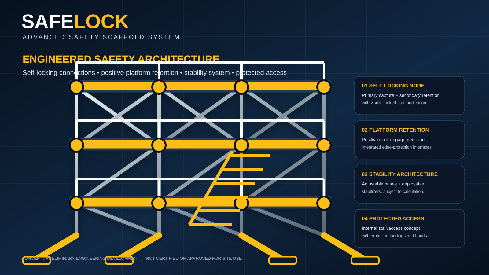

PHYSICAL INDUSTRIAL INVENTION · ENGINEERING PACKAGE
SAFELOCK — Advanced Safety Scaffold System
A modular scaffold concept integrating self-securing structural connections, positive platform retention, stability/outtrigger deployment, protected internal access and progressive erection-state safety.
Engineering Package
Includes the complete engineering concept, preliminary dimensioned development specification, connection architecture, platform system, stability concept, access system, manufacturing direction and testing pathway.
Development Status
SAFELOCK is a development concept. It has not been physically built, load-tested or certified. Final dimensions, structural calculations, prototype testing and jurisdiction-specific engineering approval are required before manufacture or site use.
Preliminary Development Envelope
Nominal development bay: 2,000 × 2,000 mm. Nominal development lift: 2,000 mm. Other component dimensions are preliminary engineering starting values and require validation.
Strategic Acquisition
Available for review by a strategic scaffolding, access-equipment, construction-equipment or industrial-safety company for further engineering, development and potential outright acquisition.
SAFELOCK acquisition enquiry →